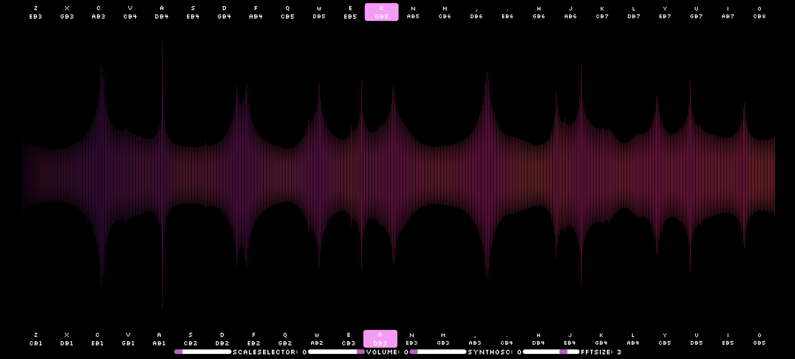

This aim of this project was to create a data visualization
using javascript objects. I used an audio processing library
called tone.js to make the synthesizer sounds and the rest was
written in regular javascript/css/html.

p5.SineWaves